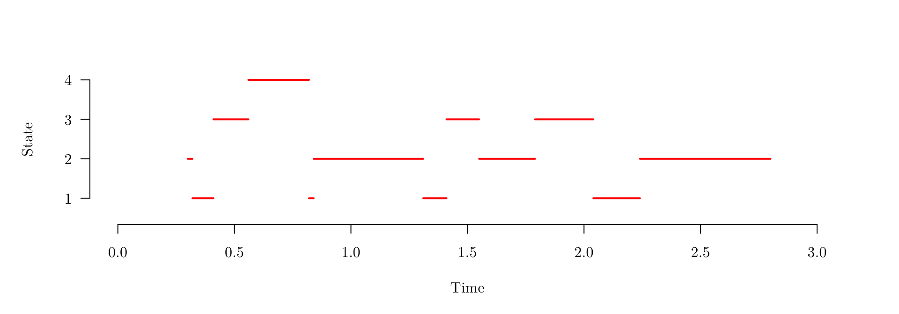

Survival Models (MATH3085/6143)
Chapter 9: Inference for Multistate Models
03/11/2025
Recap
In the last chapter, we
We moved from modelling the time-to-event variable \(T\) to modelling the state variable \(Y_t\), representing a unit’s status over time, using the framework of a stochastic process.
Defined the transition intensity function \(\mu_{ij}(x)\) as the multi-state equivalent of the hazard function. This instantaneous rate is the core parameter used to define movement from state \(i\) to state \(j\).
Derived the Kolmogorov Forward Equations to obtain the transition probabilities \(p_{ij}(x,t)\) from the transition intensity function \(\mu_{ij}(x)\).
Chapter 9: Inference for Multistate Models
Introduction
In Chapter 8, we have introduced multistate models and their properties, and presented several examples of models with possible applications to survival data analysis.
A key part of the statistical analysis process is making inference about the parameters of the model, on the basis of observed data.
For a multistate model, with states \(1,\cdots ,m\) the parameters are the transition intensity functions \[ \mu_{k\ell}(x),\quad i,j=1,\cdots , m,\quad k\ne\ell. \]
We will only consider time-homogenous models, so the parameters to be estimated are the transition intensities \[ \mu_{k\ell},\quad i,j=1,\cdots , m,\quad k\ne\ell. \]
Data
For a multistate model, the data will be the transition histories of a set of individuals \(i=1,\cdots ,n\).
We start by considering the case \(n=1\).
In this case, we might observe something like
| Transition | Start | 1 | 2 | 3 | 4 | 5 | 6 | 7 | 8 | 9 | 10 | 11 | End |
|---|---|---|---|---|---|---|---|---|---|---|---|---|---|
| Time | 0.3 | 0.32 | 0.41 | 0.56 | 0.82 | 0.84 | 1.31 | 1.41 | 1.55 | 1.79 | 2.04 | 2.24 | 2.80 |
| State | 2 | 1 | 3 | 4 | 1 | 2 | 1 | 3 | 2 | 3 | 1 | 2 | 2 |
Data structure (Gap on page 105)
We will denote the data observations using
| Transition (\(j\)) | 0 | 1 | 2 | \(\cdots\) | \(j\) | \(\cdots\) | \(J\) | \(J+1\) (end) |
|---|---|---|---|---|---|---|---|---|
| Time (\(t_j\)) | \(t_0\) | \(t_1\) | \(t_2\) | \(\cdots\) | \(t_j\) | \(\cdots\) | \(t_J\) | \(t_{J+1}\) |
| State (\(y_j\)) | \(y_0\) | \(y_1\) | \(y_2\) | \(\cdots\) | \(y_j\) | \(\cdots\) | \(y_J\) |
The likelihood for the transition intensity parameters \(\boldsymbol{\mu}=\{\mu_{k\ell},k\ne\ell\}\) is the probability of the observed sequence of holding times and transitions, given \(\boldsymbol{\mu}\), that is
\[ \begin{eqnarray*} L(\boldsymbol{\mu})&=&f_{y_0}(t_1-t_0)p(y_1|y_0)\;\times\; f_{y_1}(t_2-t_1)p(y_2|y_1)\; \times\;\cdots\\ &&\qquad \times\; f_{y_{J-1}}(t_{J}-t_{J-1})p(y_J|y_{J-1})\;\times\; S_{y_{J}}(t_{J+1}-t_{J}), \end{eqnarray*} \]
where
- \(f_k(t)\) is the exponential probability density function of the holding time \(t\) in state \(k\) and
- \(p(\ell|k)\) is the conditional probability of transition from state \(k\) to state \(\ell\) given that a transition has happened.
Likelihood (Gap on page 106)
To compute the likelihood, we have
\[ \begin{eqnarray*} L(\boldsymbol{\mu})&=&f_{y_0}(t_1-t_0)p(y_1|y_0)\;\times\; f_{y_1}(t_2-t_1)p(y_2|y_1)\; \times\;\cdots\\ &&\qquad \times\; f_{y_{J-1}}(t_{J}-t_{J-1})p(y_J|y_{J-1})\;\times\; S_{y_{J}}(t_{J+1}-t_{J})\\ &=& S_{y_{J}}(t_{J+1}-t_{J}) \prod_{j=1}^J f_{y_{j-1}}(t_{j}-t_{j-1}) \cdot p(y_j|y_{j-1}), \end{eqnarray*} \] where \[ f_k(t)=\sum_{\ell\ne k} \mu_{k\ell}\exp\left(-t \sum_{\ell\ne k} \mu_{k\ell}\right), \] \[ S_k(t)=\exp\left(-t \sum_{\ell\ne k} \mu_{k\ell}\right), ~~~~\text{and} \] \[ p(\ell|k)=\frac{\mu_{k\ell}}{\sum_{\ell\ne k} \mu_{k\ell}}. \]
Likelihood (Gap on page 106)
Hence, \[ \begin{eqnarray*} L(\boldsymbol{\mu})&=&S_{y_{J}}(t_{J+1}-t_{J}) \prod_{j=1}^J f_{y_{j-1}}(t_{j}-t_{j-1})p(y_j|y_{j-1})\\ &=&\exp\left(-(t_{J+1}-t_{J})\sum_{\ell\ne y_J} \mu_{y_J\ell}\right)\\ &&\qquad\times \prod_{j=1}^J \exp\left(-(t_{j}-t_{j-1}) \sum_{\ell\ne y_{j-1}} \mu_{y_{j-1}\ell}\right) \mu_{y_{j-1}y_j}\\ &=&\prod_{j=1}^{J+1} \exp\left(-(t_{j}-t_{j-1}) \sum_{\ell\ne y_{j-1}} \mu_{y_{j-1}\ell}\right) \prod_{j=1}^J \mu_{y_{j-1}y_j}\\ &=&\prod_{j=1}^{J+1} \prod_{\ell\ne y_{j-1}} \exp\left\{-(t_{j}-t_{j-1}) \mu_{y_{j-1}\ell}\right\} \prod_{j=1}^J \mu_{y_{j-1}y_j}. \end{eqnarray*} \]
So the likelihood factorises into a series of terms, each containing a single transition intensity \(\mu_{k\ell}\).
Likelihood (Gap on page 106)
Gathering together all the terms containing a particular \(\mu_{k\ell}\), we obtain \[ \begin{eqnarray*} L(\mu_{k\ell})&=&\mu_{k\ell}^{n_{k\ell}} \prod_{j:y_{j-1}=k}^{J+1} \exp\left\{-(t_{j}-t_{j-1})\mu_{k\ell}\right\} \\ &=&\mu_{k\ell}^{n_{k\ell}}\exp\left(-t^+_k \mu_{k\ell}\right) \end{eqnarray*} \] where
- \(t^+_k\) is the total observed holding time in state \(k\)
- \(n_{k\ell}\) is the total observed number of transitions from state \(k\) to state \(\ell\)
are called sufficient statistics.
Therefore the likelihood for the full set of transition intensity parameters \(\boldsymbol{\mu}=\{\mu_{k\ell},k\ne\ell\}\) for a single individual transition history is \[ L(\boldsymbol{\mu})=\prod_{k,\ell:k\ne \ell}\mu_{k\ell}^{n_{k\ell}} \cdot \exp\left(-t^+_k \mu_{k\ell}\right). \]
MLE for \(\mu\) (Gap on page 109)
The log likelihood is \[ \ell(\boldsymbol{\mu})=\sum_{k,\ell:k\ne \ell}{n_{k\ell}}\log \mu_{k\ell} -\sum_{k,\ell:k\ne \ell}t^+_k \mu_{k\ell} \] and therefore \[ \frac{\partial}{\partial\mu_{k\ell}} \ell(\boldsymbol{\mu}) =\frac{n_{k\ell}}{\mu_{k\ell}} -t^+_k \] so the MLE solves
\[ \frac{n_{k\ell}}{\hat\mu_{k\ell}} -t^+_k = 0 \qquad\Rightarrow\qquad \hat\mu_{k\ell}=\frac{n_{k\ell}}{t^+_k}. \]
Standard errors for \(\hat{\mu}\) (Gap on page 109)
The second derivatives of the log likelihood are \[ \frac{\partial^2}{\partial\mu_{k\ell}^2} \ell(\boldsymbol{\mu}) =-\frac{n_{k\ell}}{\mu_{k\ell}^2} \] and all other second derivatives, namely \(\frac{\partial^2}{\partial\mu_{k\ell}\partial\mu_{ij}} \ell(\boldsymbol{\mu})\), are zero.
Therefore, we have that the MLEs are approximately independent (in large samples) and \[ \text{Var}\left(\hat\mu_{k\ell}\right)=\frac{\mu_{k\ell}^2}{n_{k\ell}} \qquad\Rightarrow\qquad \text{se}\left(\hat\mu_{k\ell}\right)=\frac{\hat\mu_{k\ell}}{n_{k\ell}^{1/2}} \] so confidence intervals for the transition intensities can be easily constructed, based on the large sample normal distribution of the MLE.
Example (Gap on page 111)
Let’s get back to the numerical example we introduced in the beginning of the chapter.
| Transition | Start | 1 | 2 | 3 | 4 | 5 | 6 | 7 | 8 | 9 | 10 | 11 | End |
|---|---|---|---|---|---|---|---|---|---|---|---|---|---|
| Time | 0.3 | 0.32 | 0.41 | 0.56 | 0.82 | 0.84 | 1.31 | 1.41 | 1.55 | 1.79 | 2.04 | 2.24 | 2.80 |
| State | 2 | 1 | 3 | 4 | 1 | 2 | 1 | 3 | 2 | 3 | 1 | 2 | 2 |

\[ t^+_1=0.41,\quad t^+_2=1.29,\quad t^+_3=0.54, ~~~\text{and}~~~~ t^+_4=0.26. \]
Example (Gap on page 111)
\[ [n_{k\ell}]=\left(\begin{array}{cccc} -&2&2&0\\ 2&-&1&0\\ 1&1&-&1\\ 1&0&0&- \end{array}\right), \]
\[ [\hat\mu_{k\ell}]=\left(\begin{array}{cccc} -&\frac{2}{0.41}&\frac{2}{0.41}&0\\[2pt] \frac{2}{1.29}&-&\frac{1}{1.29}&0\\[2pt] \frac{1}{0.54}&\frac{1}{0.54}&-&\frac{1}{0.54}\\[2pt] \frac{1}{0.26}&0&0&- \end{array}\right)= \left(\begin{array}{cccc} -&4.88&4.88&0\\ 1.55&-&0.78&0\\ 1.85&1.85&-&1.85\\ 3.85&0&0&- \end{array}\right), ~~~\text{and} \]
\[ [\text{se}(\hat\mu_{k\ell})]=\left(\begin{array}{cccc} -&3.45&3.45&0\\ 1.10&-&0.78&0\\ 1.85&1.85&-&1.85\\ 3.85&0&0&- \end{array}\right). \]
Multiple sequences \((n > 1)\) (Gap on page 112)
In practice, we will observe multiple histories of transitions corresponding to individuals \(i=1,\cdots ,n\) in the sample, with transition frequencies \([n_{ik\ell}]\) and holding times \(\{t^+_{ik}\}\).
We make the standard assumption that the \(n\) observed histories are realizations of independent random processes, so the full likelihood (joint probability) is obtained by multiplying the individual likelihoods \[ \begin{eqnarray*} L(\boldsymbol{\mu})&=&\prod_{i=1}^n \;\prod_{k,\ell:k\ne \ell}\mu_{k\ell}^{n_{ik\ell}}\exp\left(-t^+_{ik} \mu_{k\ell} \right) \\ &=&\prod_{k,\ell:k\ne \ell}\mu_{k\ell}^{n_{k\ell}}\exp\left(-t^+_k \mu_{k\ell}\right) \end{eqnarray*} \]
where now
- \(t^+_{k}\) is the total observed holding time in state \(k\) across all individuals and
- \(n_{k\ell}\) is the total observed number of transitions from state \(k\) to state \(\ell\) across all individuals.
Inference proceeds exactly as Sections 9.4 and 9.5 with these new sufficient statistics.